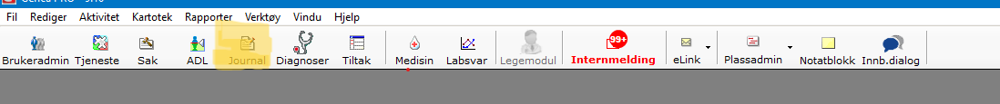
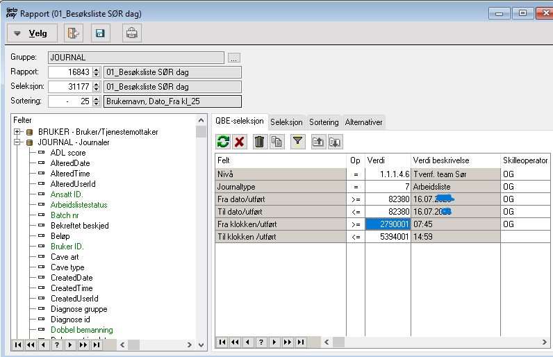
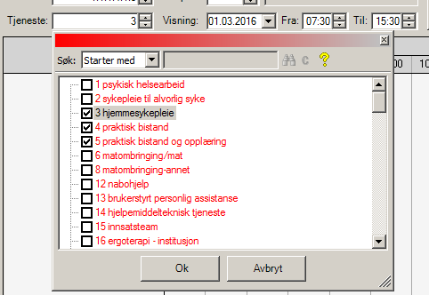
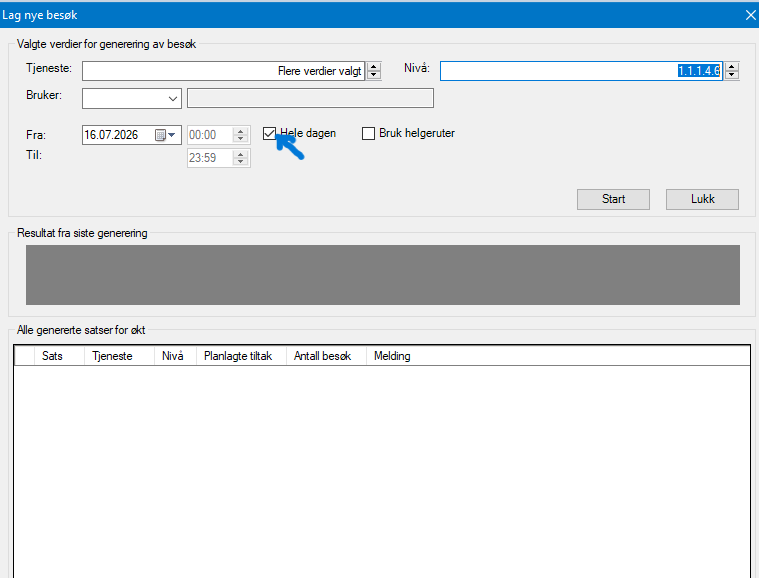
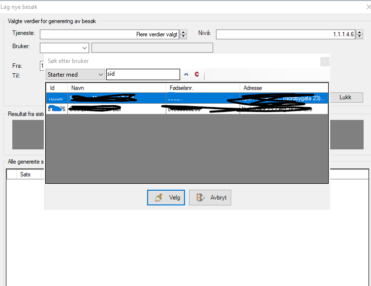

Merkantil
- Klikk på journal øverst i siden
- Klikk på printer-ikonet
- Velg om du vil printe ut for dag eller kveld
- Velg dato for dagen du vil printe ut. Velg dagens dato ved å dobbelklikke og høyreklikke i feltet verdi
- Klikk på printer-ikonet
- Vent til listen vises på siden
- Klikk print


Kommer senere
- Reset Citrix:
- Lukk alle vinduer
- Nederst til høyre i siden, klikk på pillen som peker oppover
- Du ser noen små ikoner, blant annet citrix, teams,...
- Høreklikk på Citrix-ikonet
- Velg advanced preferences
- klikk på reset Citrix
- Klikk på nåla øverst til høyre inni dashbord
- Nåla må peke til venstre
- Klikk en gang inni vaktboka
Hvor finner jeg ofte brukte skjemaer:
- Samtykkeskjema
- Praktisk bistand
- Søknad om trygghetsalarm
- Tannhelse-skjema
- Nøkkelkvittering
Kommer senere





Kommer senere
- Printe ut besøksliste dag/kveld
- Printe ut journaler som skal leses på morgenrapport
- Generere arbeidslister
- Bemmaning
- Printe ut bredeskapsplan for 2 uker av gangen
- Printe ut besøksliste
- Printe ut brukerkort for alle brukere en gang i måned
- Printe ut faktureringsgrunnlag og sammenligne tiltakstid med tiden som er journalført
- Plassadministrasjon
- Klikk på tjeneste
- Klikk på printer
- Velg "15001 Oslo 84 tiltak med aktive tidsplaner", dobbelklikk
- Klikk på printer,
- det åpner seg etnytt vindu(Rapportvalg for Oslo 84)
- Velg fra/til dato, for 2 uker fra dagensdato
- tjeneste 3
- velg nivå
- Klikk på "ok" også printer-ikon
- Alt må utføres for tjeneste 15 også
- Klikk på Brukeradmin
- Hakk av alle brukere
- Klikk på prinetr
- Det åpnes et vindu med alle brukere
- Print ut, viktig å printe ut på en side: velg printix anywhere
- Print ut og legg i eget perm
- Ta skjermbilde av pc-skjerm:
- windows + skift + S
- windows + prtscn(print screen)
- prtsn(print screen)
- Alt + prtsn
Kommer snart
Kommer senere